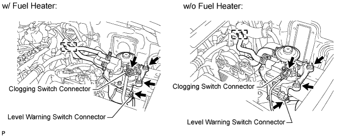
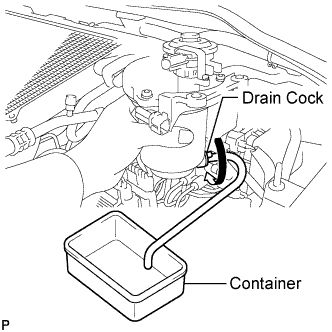
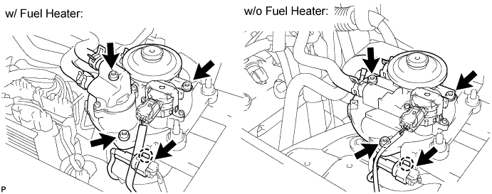
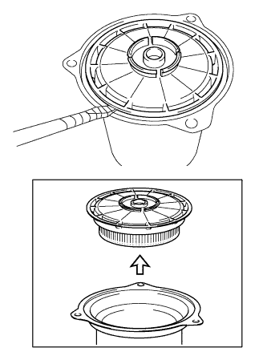
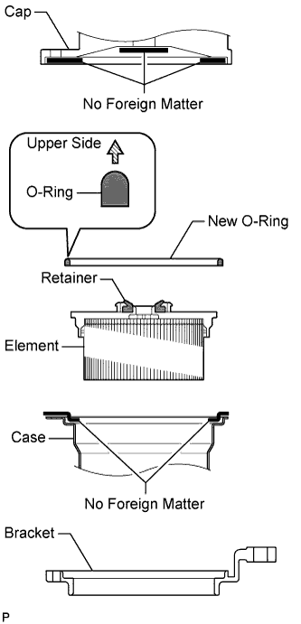
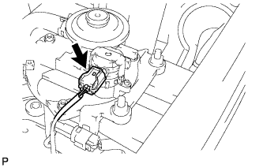

FUEL FILTER > REPLACEMENT |
| 1. DRAIN FUEL FROM FUEL FILTER |
Detach the fuel hose clamp.

Disconnect the clogging switch connector and level warning switch connector.
 |
Remove the 2 nuts and lift up the fuel filter assembly.
Connect a hose to the drain cock. Place the other end of the hose into a container under the drain cock.
Loosen the drain cock to drain fuel.
Tighten the drain cock by hand.
Install the fuel filter assembly with the 2 nuts.
Connect the clogging switch connector and level warning switch connector.
Attach the fuel hose clamp.
| 2. REMOVE FUEL FILTER ELEMENT ASSEMBLY |
Disconnect the level warning switch connector, and detach the level warning switch connector clamp.

Using a 5 mm hexagon socket wrench, remove the 3 bolts and disconnect the fuel filter cap.
Remove the fuel filter case and element assembly.
Remove the O-ring and retainer.
 |
Using a screwdriver, remove the fuel filter element from the case.
| 3. INSTALL FUEL FILTER ELEMENT ASSEMBLY |
Clean the fuel filter case.
 |
Install the fuel filter element to the case.
Install the retainer.
Install a new O-ring.
Install the fuel filter case and element assembly to the bracket.
Set the fuel filter cap on the case.
Using a 5 mm hexagon socket wrench, install the fuel filter cap with the 3 bolts.
Further tighten the first bolt tightened above so that its torque value is slightly more than the torque specification.
Attach the level warning switch connector clamp and connect the level warning switch connector.
| 4. RESET FUEL SYSTEM WARNING LIGHT |
 |
Disconnect the clogging switch connector.
Turn the engine switch on (IG).
After turning the engine switch on (IG), connect the clogging switch connector within 3 to 60 seconds.
w/o Multi-information Display:
Check that the fuel system warning light on the combination meter turns off.
w/ Multi-information Display:
Check that the fuel system warning on the multi-information display turns off.
| 5. BLEED AIR FROM FUEL SYSTEM |
 |
Using the hand pump, bleed air from the fuel system until pumping becomes difficult.
| 6. INSPECT FOR FUEL LEAK |
Start the engine. Check that leaking sounds, sucking sounds or other unusual sounds cannot be heard.